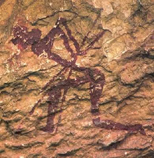

La Cueva de la Araña, (entre el 9000 y el 1400 a. C.), perteneciente al Arte Rupestre Levantino fue declarado por la Unesco en 1998 Patrimonio de la Humanidad. Contiene una de las representaciones más famosas en todo el mundo, la recolección de la miel. Se puede contratar una visita guiada en el Ecomuseo de Bicorp.